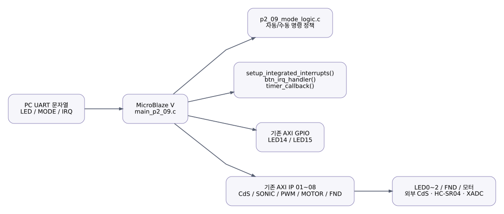

1. 09장 하드웨어 변경 범위
이번 장의 기능 추가는 CPU의 C 프로그램과 기존 AXI INTC의 두 인터럽트 소스 동시 연결입니다. 새 사용자 AXI IP, 새 보드 핀, 새 센서 RTL은 만들지 않습니다.

기존 GPIO·Timer·UART·Buttons·FND·PWM·CdS·SONIC·Motor·XADC는 08장 IP를 재사용합니다.
2. 인터럽트 라인과 주소 계약
| 장치 | 하드웨어 경로 | CPU 소프트웨어 |
|---|---|---|
| BTNU/BTND/BTNL/BTNR | P2-03 버튼 IP → INTC IRQ 슬롯 | btn_irq_handler() W1C + 이벤트 카운트 |
| AXI Timer | Timer interrupt → INTC 다른 IRQ 슬롯 | XTmrCtr_InterruptHandler → timer_callback() |
| AXI UART Lite | 기존 USB-UART → RX FIFO | poll_uart() Polling. UART IRQ 미사용 |
| AXI GPIO | 기존 LED 상위 GPIO 출력 | LED14 활동·LED15 heartbeat |
실제 xlconcat 입력 순서, IRQ 슬롯 번호와 BSP의 P2_03_BTN_INTR_ID 및 P2_09_TIMER_INTR_ID를 일치시켜야 합니다. 이미 연결되어 있다면 중복 IP를 추가하지 않습니다.
3. LED0~15 출력 소유권
| 출력 | 단일 소유권 | 기준 |
|---|---|---|
| LED0 | P2-01 사용자 LED AXI IP | LED ON/OFF |
| LED1 | P2-05 auto_light_controller | PWM 0..100 · CdS AUTO |
| LED2 | P2-06 sonic_alert | 경고 출력 |
| LED3~13 | 기존 AXI GPIO 경로 | 09장 C는 0으로 구동; 신규 기능을 배정하지 않음 |
| LED14 | 기존 AXI GPIO bit14 | 명령 행 활동 토글 |
| LED15 | 기존 AXI GPIO bit15 | Timer IRQ heartbeat |
GPIO bit14/15 출력 경로가 실제로 기존 Top의 gpio_led[15:3]로 연결되어 있는지 Sources 및 Implemented Schematic을 대조합니다. 실제 출력 소유권 두 곳이 겹치면 구현 전 수정합니다.
4. 08장 사용자 Top 원본 그대로 보존
Top Verilog 원문 (09장 재사용, 내용 변경 없음)
// P2-08 USER TOP: Shell/Wrapper ONLY. No always/FSM/policy expressions.
// (유지) LED0 P2-01; LED1 P2-05 AUTO/PWM controller;
// (변경) LED2 P2-06 sonic_alert, LED3~15 old GPIO.
// WARNING: generated BD Wrapper must expose vauxp6/vauxn6 before this file can elaborate.
module basys3_soc11_top (
input wire clk, input wire btnC,
input wire btnU, input wire btnD, input wire btnL, input wire btnR,
input wire cds_digital, // JA1, J1 (P2-05)
output wire sonic_trig, // JA2, L2; see level-shifting note
input wire sonic_echo, // JA3, J2; external 5V->3.3V conversion required
output wire motor_in1, output wire motor_in2, output wire motor_ena,
input wire [15:0] sw, output wire [15:0] led,
// (추가) JXADC1(P)·JXADC7(N) : VAUX6 쌍, 디지털 I/O 아님.
input wire vauxp6, input wire vauxn6,
input wire RsRx, output wire RsTx,
output wire [6:0] seg, output wire [3:0] an, output wire dp
);
wire [15:0] gpio_led;
wire p2_led0;
wire pwm_led1;
wire auto_enable, cds_dark, cds_valid;
wire light_led1;
wire sonic_alert, sonic_unsafe;
auto_light_controller u_light_controller (
.pwm_led_i(pwm_led1),.auto_enable_i(auto_enable),
.sensor_dark_i(cds_dark),.sensor_valid_i(cds_valid),
.led1_o(light_led1)
);
// (변경) Pure board-bit wiring; LED2 has exactly one source.
assign led = {gpio_led[15:3], sonic_alert, light_led1, p2_led0};
soc11_integration_wrapper u_soc11 (
.clk(clk),.btnC(btnC),
.btnU(btnU),.btnD(btnD),.btnL(btnL),.btnR(btnR),
.sw_tri_i(sw),.led_tri_o(gpio_led),
.UART_0_rxd(RsRx),.UART_0_txd(RsTx),
.p2_led_o(p2_led0),.pwm_led1(pwm_led1),
.fnd_seg(seg),.fnd_an(an),.fnd_dp(dp),
.cds_digital(cds_digital),
.cds_dark(cds_dark),.cds_valid(cds_valid),
.cds_auto_enable(auto_enable),
.sonic_trig(sonic_trig),.sonic_echo(sonic_echo),
.sonic_alert(sonic_alert),.sonic_unsafe(sonic_unsafe),
.motor_in1(motor_in1),.motor_in2(motor_in2),
.motor_ena(motor_ena),
// (추가) BD XADC Wizard Vaux6를 Make External 후 wrapper 포트 재생성.
.vauxp6(vauxp6),.vauxn6(vauxn6)
);
endmodule
실제 자동 생성 Wrapper는 사용자의 Vivado 프로젝트에서 재생성해야 하며, 08장 예제 포트가 그대로 존재한다고 보증하지 않습니다. 기존 생성 Wrapper 파일은 직접 수정하지 않습니다.
5. RTL 재사용 및 파일 경로
다음 파일은 이전 장에서 작성한 재사용 IP이며, 09장에서는 기능을 새로 재구현하지 않습니다.
- 02장 · fnd_scan_controller.v
- 03장 · button_event_core.v
- 04장 · pwm_core.v
- 05장 · cds_digital_core.v
- 05장 · auto_light_controller.v
- 06장 · hc_sr04_core.v
- 07장 · motor_controller.v
기존 02~07장의 각 AXI Slave·Wrapper 소스 전체는 reuse/ 폴더에 포함합니다. 08장의 AMD XADC Wizard는 Vivado 프로젝트에서 생성합니다.
6. 성능·안전 경계
모터 보호는 기존 motor_controller에서 센서 freshness·근접·방향 전환 Deadtime을 판단합니다. MODE AUTO의 C 명령 거부는 별도 상위 정책이며, 비정상 CPU나 다른 AXI Master의 직접 레지스터 쓰기까지 막는 하드웨어 장치가 아닙니다.